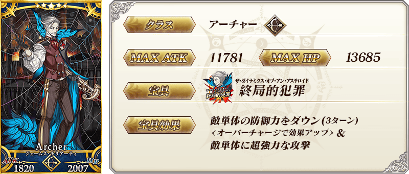
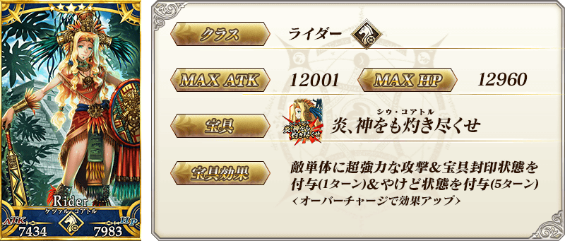
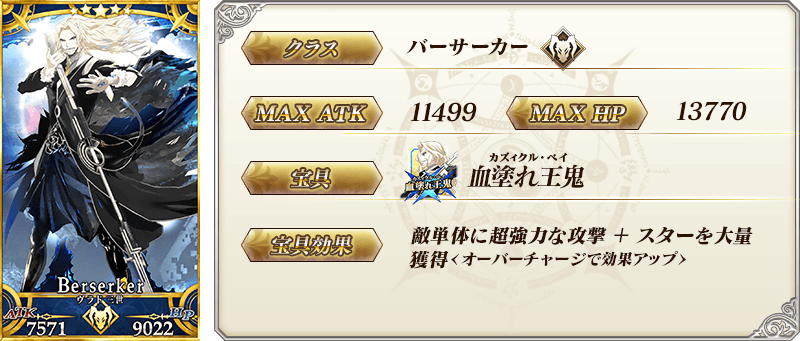
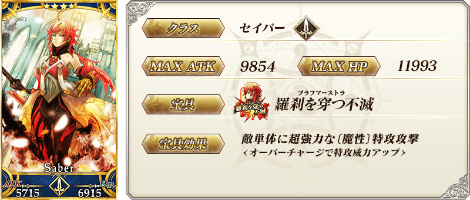
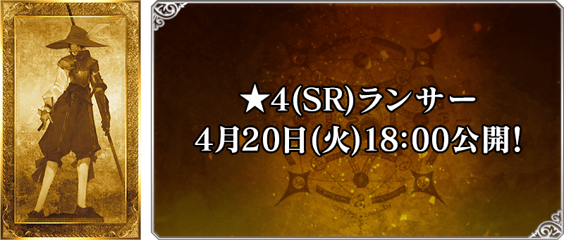
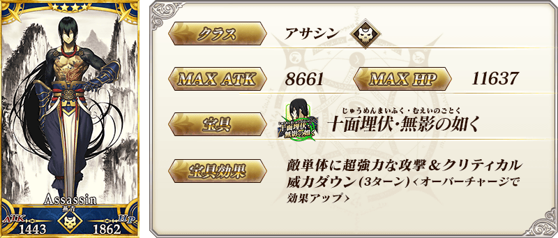
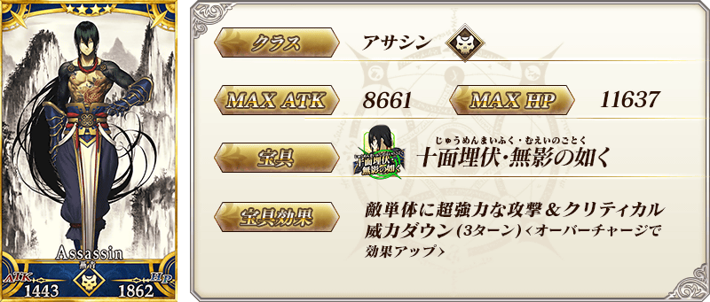
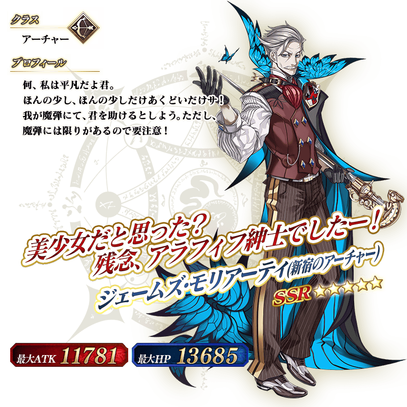
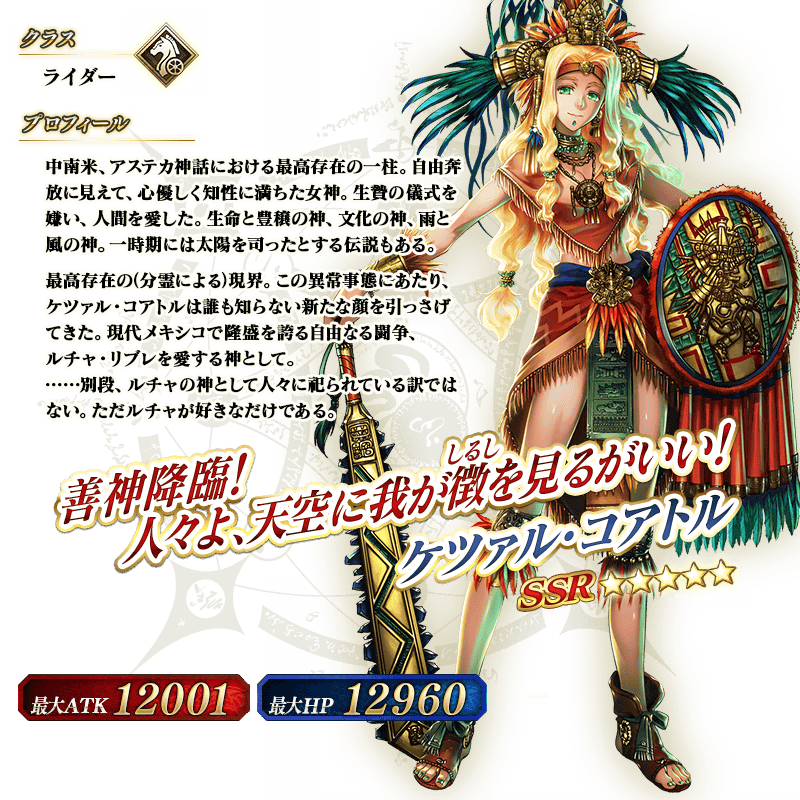
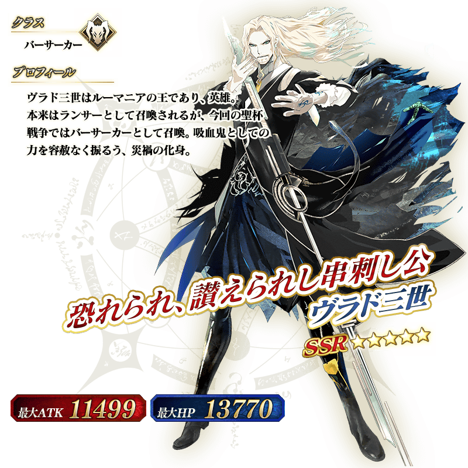

※4月19日(一) 17:00圖片修正
※4月19日(一) 17:00圖片修正
◆「從者強化關卡 第13彈Pick Up召喚(下午5點交替)」期間◆
期間:2021年4月14日(三) 17:00～4月28日(三) 11:59
舉辦期間限定「從者強化關卡 第13彈Pick Up召喚(下午5點交替)」！
本次從「從者強化關卡 第13彈」中做為強化對象的從者之中，6位Pick Up！
本召喚是舉辦期間中會在每天17:00切換Pick Up對象。
關於每天的Pick Up對象從者。會在強化關卡追加時公開。
▼強化關卡追加時間
・4月14日(三) 17:00～★5(SSR)弗拉德三世(Berserker)
・4月15日(四) 17:00～★4(SR)羅摩
・4月17日(六) 17:00～★5(SSR)魁札爾・科亞特爾(Rider)
・4月18日(日) 17:00～★4(SR)燕青(新宿的Assassin)
・4月19日(一) 17:00～★5(SSR)詹姆斯・莫里亞蒂(新宿的Archer)
・4月20日(二) 17:00～★4(SR)Lancer
Pick Up期間中，Pick Up對象從者的出現機率提升！
詳情請在聖晶石召喚畫面左下的召喚詳細確認。
11次召喚中確定1張★4(SR)以上和確定1位★3(R)以上的從者！ ※確定★4(SR)以上包含從者和概念禮裝。
◆有關從者的注意◆
※下述的從者在Pick Up期間結束後仍會在故事召喚被抽出。
・★5(SSR)弗拉德三世(Berserker)
・★4(SR)羅摩
關於每天的Pick Up對象從者的Pick Up時間，敬請確認下表。
◆「從者強化關卡 第13彈Pick Up召喚(下午5點交替)」Pick Up內容◆
| Pick Up期間 | Pick Up內容 |
|---|---|
| 4/14(三) 17:00～ 4/15(四) 17:59 |
★5 弗拉德三世(Berserker) |
| 4/15(四) 17:00～ 4/17(六) 17:59 |
★5 弗拉德三世(Berserker) ★4 羅摩 |
| 4/17(六) 17:00～ 4/18(日) 17:59 |
★5 魁札爾・科亞特爾(Rider) ★4 羅摩 |
| 4/18(日) 17:00～ 4/19(一) 17:59 |
★5 魁札爾・科亞特爾(Rider) ★4 燕青(新宿的Assassin) |
| 4/19(一) 17:00～ 4/20(二) 17:59 |
★5 詹姆斯・莫里亞蒂(新宿的Archer) ★4 羅摩 ★4 燕青(新宿的Assassin) |
| 4/20(二) 17:00～ 4/21(三) 17:59 |
★5 詹姆斯・莫里亞蒂(新宿的Archer) ★4 強化對象Lancer |
| 4/21(三) 17:00～ 4/22(四) 17:59 |
★5 弗拉德三世(Berserker) ★4 羅摩 ★4 強化對象Lancer ★4 燕青(新宿的Assassin) |
| 4/22(四) 17:00～ 4/23(五) 17:59 |
★5 魁札爾・科亞特爾(Rider) ★4 羅摩 ★4 強化對象Lancer ★4 燕青(新宿的Assassin) |
| 4/23(五) 17:00～ 4/24(六) 17:59 |
★5 詹姆斯・莫里亞蒂(新宿的Archer) ★4 羅摩 ★4 強化對象Lancer ★4 燕青(新宿的Assassin) |
| 4/24(六) 17:00～ 4/25(日) 17:59 |
★5 魁札爾・科亞特爾(Rider) ★5 弗拉德三世(Berserker) ★4 羅摩 ★4 強化對象Lancer ★4 燕青(新宿的Assassin) |
| 4/25(日) 17:00～ 4/26(一) 17:59 |
★5 詹姆斯・莫里亞蒂(新宿的Archer) ★5 魁札爾・科亞特爾(Rider) ★4 羅摩 ★4 強化對象Lancer ★4 燕青(新宿的Assassin) |
| 4/26(一) 17:00～ 4/27(二) 17:59 |
★5 詹姆斯・莫里亞蒂(新宿的Archer) ★5 弗拉德三世(Berserker) ★4 羅摩 ★4 強化對象Lancer ★4 燕青(新宿的Assassin) |
| 4/27(二) 17:00～ 4/28(三) 11:59 |
★5 詹姆斯・莫里亞蒂(新宿的Archer) ★5 魁札爾・科亞特爾(Rider) ★5 弗拉德三世(Berserker) ★4 羅摩 ★4 強化對象Lancer ★4 燕青(新宿的Assassin) |
※請注意會在特定時間變更Pick Up從者。
 ※4月19日(一) 17:00圖片修正
 ※4月17日(六) 17:00圖片修正 ※上述「★5(SSR)魁札爾・科亞特爾(Rider)」的卡面為靈基再臨第1階段。
 ※上述「★5(SSR)弗拉德三世(Berserker)」的卡面為靈基再臨第1階段。
 ※4月15日(四) 17:00圖片修正 ※上述「★4(SR)羅摩」的卡面為靈基再臨第1階段。

 
※4月18日(日) 17:00圖片修正

※4月18日(日) 17:00圖片修正
 ※4月19日(一) 17:00圖片追加
 ※4月17日(六) 17:00圖片追加 ※上述「★5(SSR)魁札爾・科亞特爾(Rider)」的立繪為靈基再臨第1階段。
 ※上述「★5(SSR)弗拉德三世(Berserker)」的立繪為靈基再臨第1階段。
介紹在本召喚Pick Up從者的寶具演出！
【★5(SSR)詹姆斯・莫里亞蒂(新宿的Archer)】
※4月19日(一) 17:00追記
【★5(SSR)魁札爾・科亞特爾(Rider)】
※4月17日(六) 17:00追記
【★5(SSR)弗拉德三世(Berserker)】
【★4(SR)羅摩】
※4月15日(四) 17:00追記
【★4(SR)燕青(新宿的Assassin)】
※4月18日(日) 17:00追記
其他還有，「從者強化關卡 第13彈」同時舉辦！
關於詳情，請自下述橫幅確認。
■「從者強化關卡 第13彈」詳細情報